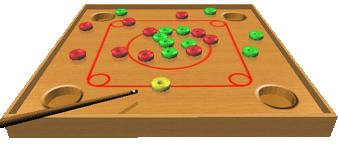

DGM Couronne é um software nacional, freeware, desenvolvido por David Maziero (DGM Soft).
O jogo consiste em 20 discos, 10 verdes e 10 vermelhos
, numa mesa. Ao início do jogo, cada jogador recebe uma cor; seu objetivo é encaçapar todos os
discos de sua cor, usando um disco amarelo, que deve ser posicionado
na linha vermelha.
O primeiro lance é sempre do jogador verde.
O jogador continuará jogando até que:
- seu disparo não derrube nenhum disco de sua cor;
- seu dispado derrube um disco do oponente;
Caso o disco amarelo seja encaçapado, e haja menos de 10 discos da
cor do jogador na mesa, 1 disco do mesmo será reposto.
O jogo termina quando um jogador conseguir limpar todos os discos de sua cor da mesa.
No entanto, há a possibilidade de empate, caso o jogador, no último lance, encaçape os dois
últimos discos de cores diferentes. Nesse caso, os jogadores jogam novamente.